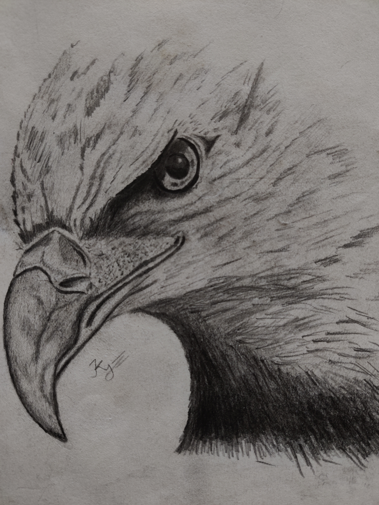
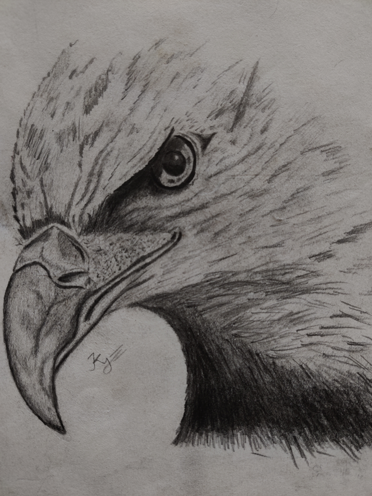
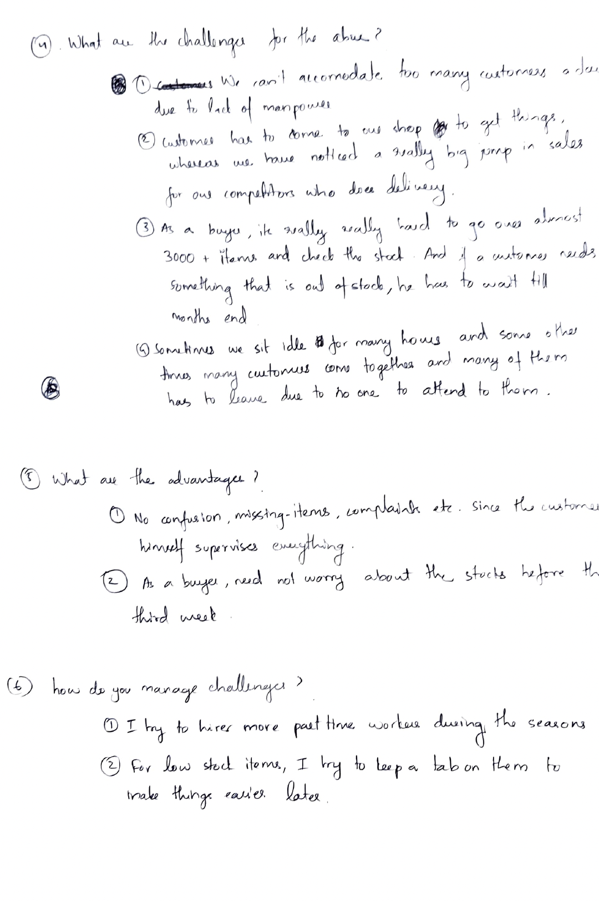
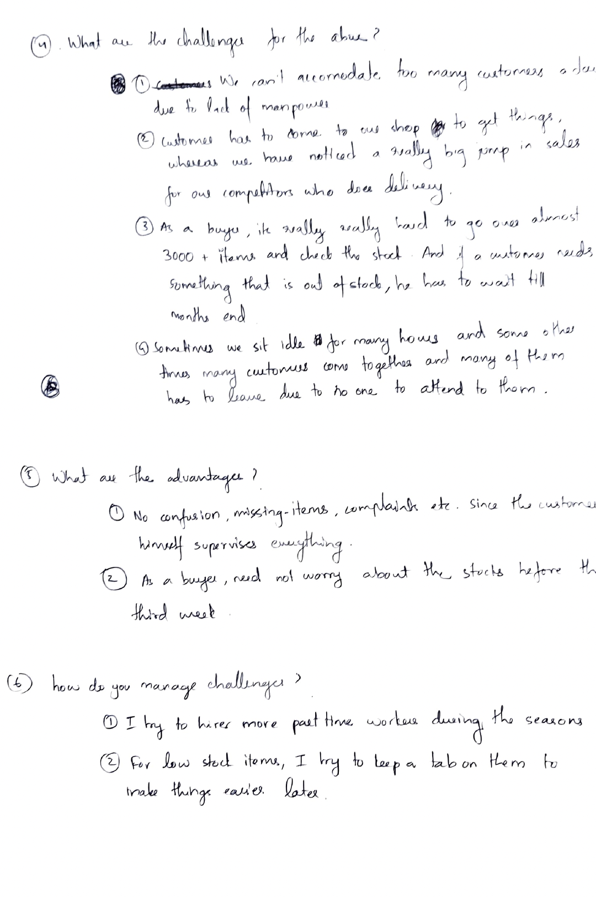

I was a great student throughout my school days, earning a GPA of 10.0 in class X and securing 94.6% in class XII. The next step seemed obvious: either Engineering or Medicine. However, since I developed a strong aversion to biology at that time (ironically, all the books I read now are directly or indirectly related to the field of medicine), I decided to pursue a career in Engineering. Opting for one of the best colleges in India for this path, I set my sights on IIT and prepared for the formidable IIT-JEE exam, considered the toughest in Asia. So far, so good. Now what? The best coaching center in Kerala (my home state in India) was Brilliant Coaching Centre, situated in the beautiful town of Pala. The efforts it took for my family and me to secure admission there warrant another article in itself.
Classes began, and everything was going well — in fact, it was going great. I felt like a hungry child during a famine, eagerly waiting for the morsels of wisdom being dispensed by these professors. I was confident, envisioning myself on the front pages of the next year's newspaper as the top-ranked student. This optimism continued until the very first exam.
I distinctly remember feeling fairly confident even after the exam. I mean, I could have performed better, but it certainly wasn't my worst effort. However, the glass castle I had built in just a week came crashing down when the results were declared that very evening. I was ranked 384 out of 391 people. WTF!!
This revelation devastated me. For the next two weeks or so, I couldn't focus on my studies at all, constantly haunted by thoughts of the money my parents had invested in me by enrolling in this coaching center. And my ranks reflected the lackluster effort.
Then one day, I got ready early, had breakfast at the hostel canteen, and found myself wondering what I was doing there. I pondered that everyone around me was essentially doing the same thing — attending classes, listening to lectures, taking notes, studying until late, and then sleeping. Most people even referred to the same books. My thought was, if everyone is doing the same thing, how can someone be better than the other? The person sitting next to me is following the same routine. How can I surpass him? While I acknowledge that some people possess better grasping power or memory, the processes are generally the same. Given my inclination to plan and strategize throughout my life, I decided to do the same again.
What could I do better?
Perhaps I could work harder, but this seemed nearly impossible as the institution ensured that we didn't waste a second throughout the day. With only 24 hours available, there was simply no more time.
The only option left was to optimize what I was currently doing.
In a moment of inspiration, a book crossed my mind — "You Can Win" by Shiv Kera. My father had gifted me this book. Honestly, I hadn't even opened it at the time of writing, but I vividly recall two sentences written on the cover: "Winners don't do different things. They do things differently."
(Note: For organizing the passage, I am grouping the strategies into two categories — Exam Preparation Strategies and Exam Taking Strategies. This clear distinction was not present when I initially formulated these plans; I was simply exploring new ways to optimize. I am organizing it this way based on the feedback I received after the first draft. This will make it easier to review the issues I faced and the solutions I devised.)
1. Exam preparation strategies
1.1 No motivation to study or losing motivation down the line
I've had enough experiences with pep talks, motivation videos, etc. It worked maybe for 5 minutes but died down pretty quickly. I was always motivated to study in class and also in workouts for the sports I played throughout my school. After much introspection, I realized that it's the small victories in each domain that were pushing me. So I decided to track my rank in a notebook. The thought process was that if I can better my rank by at least 2-3 positions every exam, this might motivate me further.

Despite having planned to do this, I only began when I unexpectedly secured a good rank in the fourth exam, which occurred roughly 45 days into my coaching.
1.2 Can’t focus in class/feeling sleepy in class
Another area I found myself struggling with is feeling sleepy in my class. But I already had a trick up my sleeve. I had noticed in my school days that I could stay awake and focus if I try to write notes beautifully. I tried to make my notes the best possible ones out there. I would try various color pens, underline, etc. People often made fun of me, but it worked wonders for me. If some topic is tough to understand, I would not even try to spend time understanding while the class is going on. I just blindly copied whatever is on the board or whatever the prof said to my notes. What I did is, later on the same day, when my mind is clearer, and when I am fresh, sit and read through my notes and try to understand concepts.
1.3 Which book to refer?
I wavered between multiple books for the same topic, which was time-consuming. What I decided is to stick with one book for each subject. I called this the “master reference.” I refer to the notes I made in class and read the master reference at the same time each day after class. If some topic is not there in the master reference, or let's say I did not understand some topic from the master reference, only then I would venture out into other books. I remember at one point, I was spending a lot of time going book to book for some obscure topic. I immediately realized that I could just ask around other people. And this would save an immense amount of time.
I started leaving gaps in my class notes to be filled later. What I did after the classes is, I would refer to the master reference or, if needed, ask around and read from some other source about a topic and then if I find something useful, maybe an example which makes my concepts clearer, I would note it down in the gaps in my notes. If the thing that is to be added is too big or vast, I would simply mention the book and page number and edition there. My goal was to have a single point of reference towards the end.
1.4 How to make proper use of the practice/model exams?
I made a lot of mistakes during the exam. But I noticed that when the next exam came, I had no memory of any of the mistakes that I committed in the previous exam that happened just a week ago. The goal is to learn from the mistakes and move forward. But what if I don’t even remember the mistakes at all?
To tackle this, I decided to painstakingly record my mistakes. I knew this was a time-consuming ordeal, but I wanted to try something different, and it made sense theoretically. It was too hard in the beginning, but I forced myself to write it for 2-3 exams. After which this just became a habit.
To make it more engaging, I started writing in Malayalam, my mother tongue, as well as started making it funny.
I can easily call this my “master stroke in exam preparation” looking back.
I could immediately see the results. I was slowly ascending in the rank ladder. I understood that my strategies are paying off. So I was constantly searching on what I could improve. This became an obsession actually. I would experiment in each and every exam with time management, bubbling strategy, etc. Till about February first week, I attended each and every exam a different way. I would immediately analyze the exam and whatever worked, I stuck on to it. And whatever did not work, I simply recorded it and moved on.


Here are some snapshots from my Chemistry and Physics feedback notes. Unfortunately, the one for Maths got lost
2. Exam taking strategies
2.1 Zoning out during exam
I tend to zone out during the exam a lot. This was the hardest challenge for me. I can’t afford to do that in exams where time mattered a lot like KEAM, JEE MAIN, CUSAT, etc. Sometimes I would just keep on reading a question 5-10 times (not an exaggeration!) without actually understanding what it meant. I told this problem to a counselor arranged by the coaching center, and she gave a breathing technique. Where when I feel like I can’t focus, just keep the pen down, close the eyes and take 3 long deep breaths and then immediately look at the question. This time make up my mind that I have to understand each and every word. I honestly think that the final “making up my mind” did the trick, but I went along with all the steps. As I noticed that this was bringing down my stress also during the exam. There was one more trick which I have explained in the next point.
2.2 Time management
What worked for me in time management is always looking at the clock. Many of the seniors advised against this, as it will make us anxious. But I had a habit of zoning out during the exam. I would keep on reading the same question again and again, grasping nothing. I kept on experimenting and what I would do is allocate some time for each question at the beginning of the exam. If it was an exam with the same weightage for all the questions like KEAM, JEE MAIN, CUSAT, etc, I would simply divide the total time by the number of questions. I would keep on looking at the watch after every question to keep track of this time. This was slightly helpful to be on my toes and not zoning out.
2.3 Bubbling strategy for answers
Bubbling was not a big deal for JEE advanced. But I realized that it was a great deal for exams like KEAM, CUSAT, where speed is utmost important. All the professors told me to bubble the OMR sheet right away when I get an answer. But I figured that this was taking an extra 10 seconds off of my time. so I wanted to try something else. I kept on experimenting with various stuff. I concluded that I could save much time if I am answering 30 questions and marking them together in the OMR sheet. If I made any mistake, still the collateral damage was limited to 30 questions only rather than the entire exam.
2.4 Exam day routine
One piece of advice I received from my seniors is to make the exam experience as normal as possible. On the exam day, it should feel like any other day. I noticed that in my previous attempt, everything went wrong that day. I had to wake up extremely early, which was unusual for me, had to bathe early in the morning, again unusual. Have breakfast early in the morning, even going to the toilet that early was weird to me. And during the exam, at one point, I wanted to go to the bathroom. So I remembered this and tried to align my daily routine to the exam day events as much as possible. I think this worked as I was actually very cool on the exam day. I did not feel any pressure at all and it felt like any other day.
As you can see, I was becoming obsessive about this. Now when I look back, I realize that I was not really passionate about the exam. But I was actually obsessing over planning and strategizing stuff.
Ending Note
You see, I got kinda obsessed with all of this. Now that I think about it, I wasn't really crazy about the exam itself. Maybe I was just super into planning and figuring out strategies.
Looking back at my JEE journey, it's pretty clear that success didn't come easy. I started off ranked 384 out of 391, but with some strategic moves, I ended up in 24th place. It wasn't just about acing exams; it was about being tough, adaptable, and smart in problem-solving.
I made a major comeback in the JEE Advanced exam, going from not making the qualification mark in my first ever JEE mains attempt to snagging the 4407th All India Rank and landing a spot at IIT Guwahati.
This whole ride wasn't just about hitting the books; it taught me to be resilient, flexible, and strategic in everything I do. Those lessons weren't confined to classrooms or exam halls; they spilled over into life's everyday challenges.
While my tactics might not work for everyone, they highlight the importance of knowing yourself, staying strong, and tweaking your game plan when things get tough. As I wrap up this chapter, I'm taking those lessons with me, ready to tackle whatever comes my way with the same strategic mindset. The journey never really stops, and the quest for excellence keeps going.
Thank You & All The Best
Exam Preparation Strategies
No motivation: A rank-tracking notebook to motivate improvement with each exam.
Despite having planned to do this, I only began when I unexpectedly secured a good rank in the fourth exam, which occurred roughly 45 days into my coaching.
Can't focus in class: Combated sleepiness in class by making detailed, visually appealing notes.
Reserved difficult topics for post-class study sessions when the mind was clearer.
Master Reference Approach: Selected one primary reference book per subject, reducing time wasted on multiple sources.
Left gaps in class notes to be filled later, aiming for a single point of reference.
Learning from Practice Exams: Systematically recorded mistakes from each practice exam in Malayalam for engagement.
Experimented with exam strategies and continually refined approaches based on results.
Here are some snapshots from my Chemistry and Physics feedback notes. Unfortunately, the one for Maths got lost
Exam-Taking Strategies
Overcoming Zoning Out: A breathing technique to refocus during exams, addressing the tendency to zone out.
Emphasized the importance of making up the mind to understand each question.
Time Management: Constantly monitored the clock to combat zoning out during exams. Allocated specific time for each question at the beginning of exams to manage time effectively.
Bubbling Strategy: Experimented with bubbling strategies to save time, such as marking answers for 30 questions together.
Maintaining a Normal Exam Day Routine: Received advice to make the exam day experience as normal as possible to reduce stress.
Aligned daily routine with exam day events to maintain a sense of normalcy.
Thank You & All The Best


 

 
